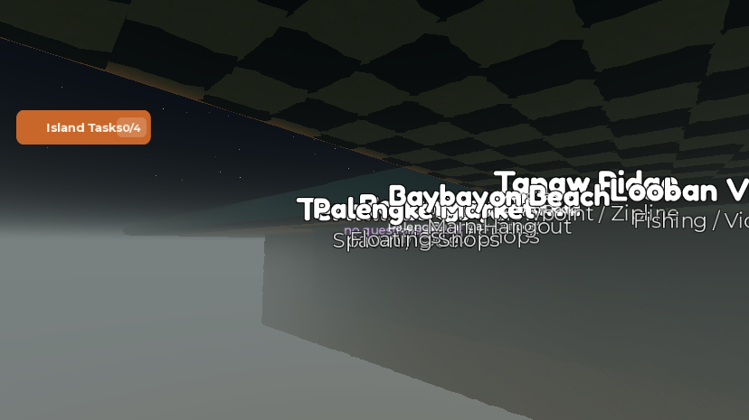
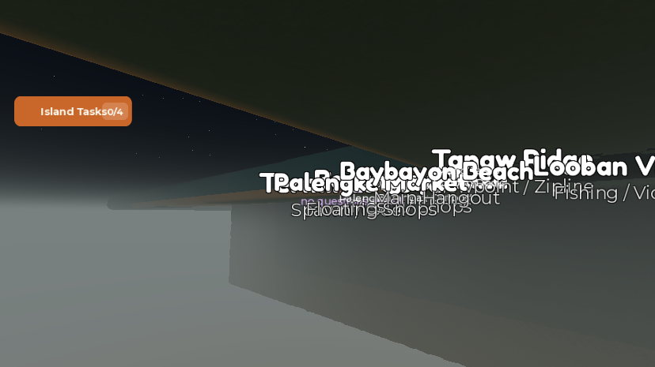
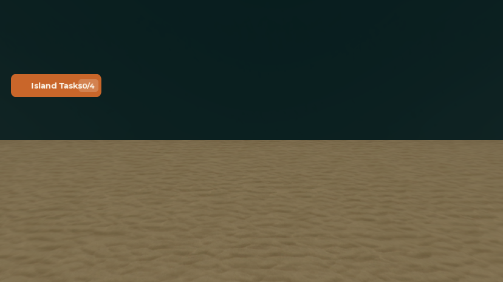

A seabed and walls for the outer sea
What was asked
- Fix the bottomless sea found during the Phase 6 playtest, where a Pating leapt near (−9, 788), went through the water and fell out of the map.
What was wrong
A column-by-column terrain scan of the whole sea (every 4-stud column where water starts at the surface) found two problems.
1. No seabed under a third of the sea
99,553 of the sea's 322,109 columns (31%) had water with empty air under it:
- An outer ring round the island's sea, from about ±830 studs out to the edge (x −1200…1200, z −800…800). The water is 32 studs deep and has nothing under it. The inner sea has a sand bottom about 12 studs down.
- The Shipwreck arena's outer water (x −390…390, z −2060…−1290): 40 studs deep over air. The arena floor itself (±150 around (0, −1700)) did have sand, and its own collision walls keep players inside, so this part was out of reach.
Anything that went through the bottom fell to y −500, where Roblox destroys fallen parts, and died. A Pating's leap came down hard enough to punch through. A diver swimming down would have done the same.
2. Nothing stopped anyone leaving the sea
Every edge of the main sea (x ±1200, z −800 and +800, and a north-east arm out to x 2060, z 1360) was open water next to air. In a test, a swimmer who kept swimming north left the water at z 800 and fell out of the world. There were no boundary parts anywhere.
What changed
1. A sand seabed under every bottomless column



- Directly below the water in each of the 99,553 columns, 4 cells (16 studs) of Sand were written, the same material as the existing seabed. It runs y −48…−32 under the outer ring and y −56…−40 under the arena's outer water. Only air cells were changed; no water, rock or existing sand was touched.
- The ring stays 32 studs deep, so there's now a 20-stud drop-off where the inner sea's 12-stud sand shelf meets it.
- AI sharks roam the same water as before.
SharkServicealready picked roam points out there, treating the missing floor as 100 deep.
2. Invisible walls round the main sea
- 14 walls in the new model
Workspace.IslaMarahuyo.SeaBounds, generated from the exact cells where water meets air sideways and merged into runs. Together they cover 10,840 studs of edge: west x −1202, south z −802, north z 802 (x −1200…180), east x 1202 (z −800…180), and the north-east arm (z 178, x 2062, z 1362, x 178). - Each wall is 4 studs thick, sits just outside the water, and runs from y −56 up to y 520. That's tall enough because a shark bite or Pating hit throws a player at 400 studs/s upward, and on a deck with no water drag that tops out around y 410. The first try at y 60 was too low. In testing, an AI shark bit the swimmer near the edge and threw them 340 up and over it.
- Walls are
Transparency 1,CanCollideon,CanQueryoff (so the camera, bait throws and shark raycasts ignore them) andCanTouchoff. The model isModelStreamingMode = Persistentso a client always has the walls, since the client owns its character's physics. - The Shipwreck arena got no walls: its own 48 collision walls (y −50…50) already enclose the playable area.
All changes
| Instance | Change | |
|---|---|---|
Workspace.Terrain | edit | Sand, 4 cells deep, under 99,553 bottomless water columns (57 regions of 256×256 studs written with WriteVoxels). No scripts changed. |
Workspace.IslaMarahuyo.SeaBounds | new | Model (Persistent streaming) with 14 SeaWall parts, as above. The runs are capped at 1024 studs each, because Roblox limits a part to 2048 studs per side. The first build lost 352 studs of the south wall to that limit. |
No undo point: Studio refused a change-history recording from the MCP context, so Ctrl+Z won't reverse the terrain edit. To undo it, rerun the same scan and turn the Sand cells directly under water in those columns back to Air. To remove the walls, move SeaBounds to ServerStorage._Retired.
Testing
Three playtests on MERS_Cov2, each ended by kicking the player from the Server, and each time Studio was then stopped from Play mode with nobody in it. There were no script errors.
- Rescan after the fill: 322,109 sea columns, the same count as before, so the sea surface is unchanged. 0 have water over air (was 99,553).
- Swimming off the north edge, before the walls: the swimmer left the water at z 800 and fell to y −373 and died. After: they stop at z 798.4, and jumping doesn't get them out.
- A bite-style throw (400 up, 150 toward the wall) from z 790: they rose to y 252, got no further than z 799.2, and fell back into the water alive.
- The Pating leap at (−9, −1, 788) that used to fall to y −317: it peaked at y 18, came down no lower than y −2.5 and stayed in the water.
- Pushing down onto the floor at (−9, 788) from y −27 for 2 s: the character held at y −26.5, resting on the sand (top at −32).
- The test account took the Pating job for free through
DebugPatingJoband handed it back before the kick. Nothing was spent or lost.
Gaps and things to check
- Boats weren't driven into a wall. A bangka is an unanchored physics model, so it should simply stop, but nobody sailed one there.
- Only the north and west edges were tested by swimming or throwing. The other walls come from the same generated outline and the same code.
- The drop-off from the 12-stud inner shelf to the 32-stud ring floor wasn't looked at from inside the water. It may look like a sudden step.
- The north-east arm (x 180…2060, z 180…1360) already had a floor. It got walls only; what's out there wasn't checked.
- No quick-test values were added.
Bodega.AxeDamage = 20from before is still there, to be restored in Phase 7.